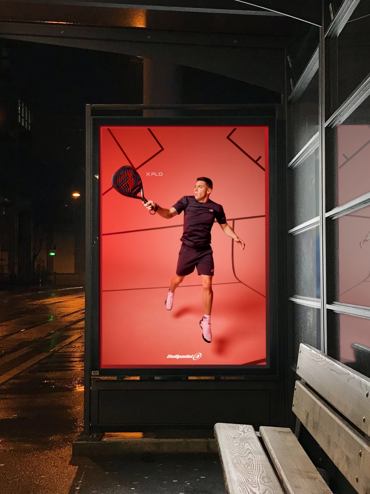
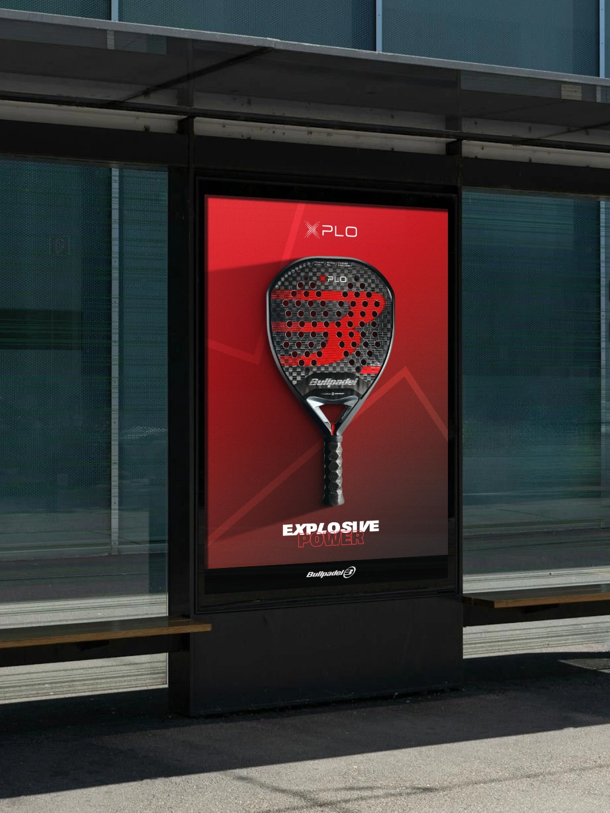
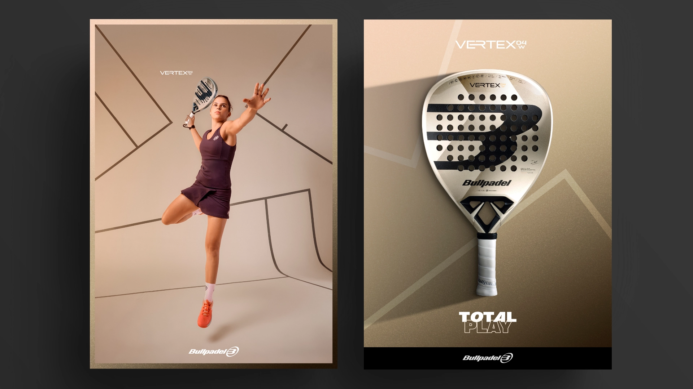
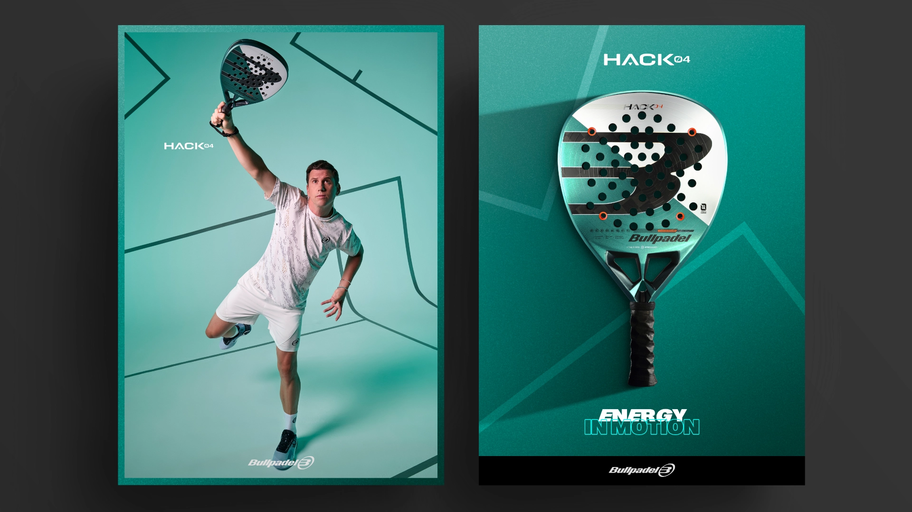
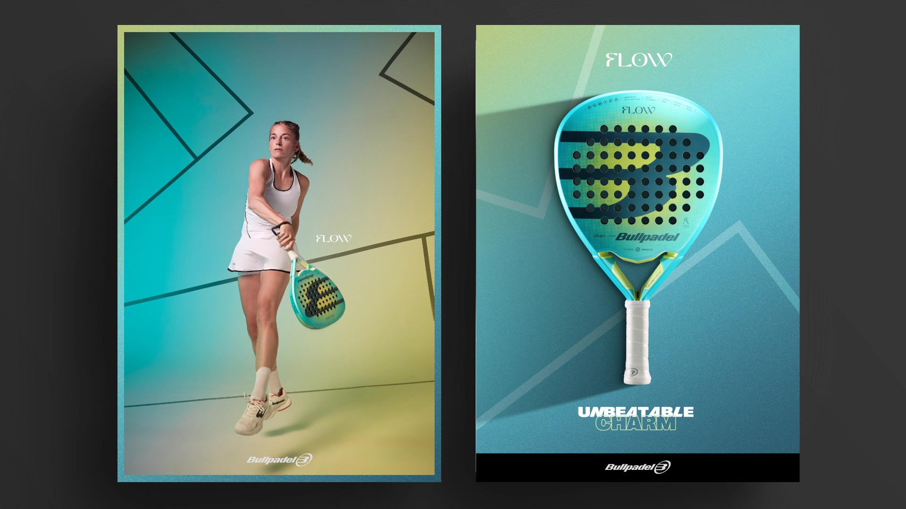
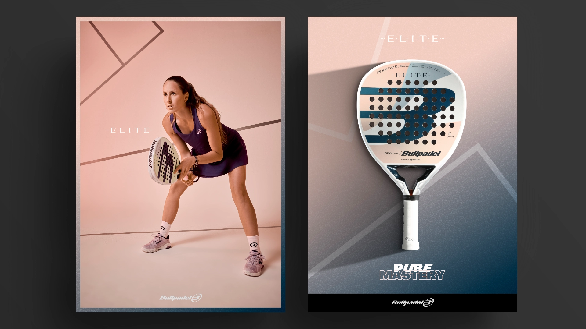
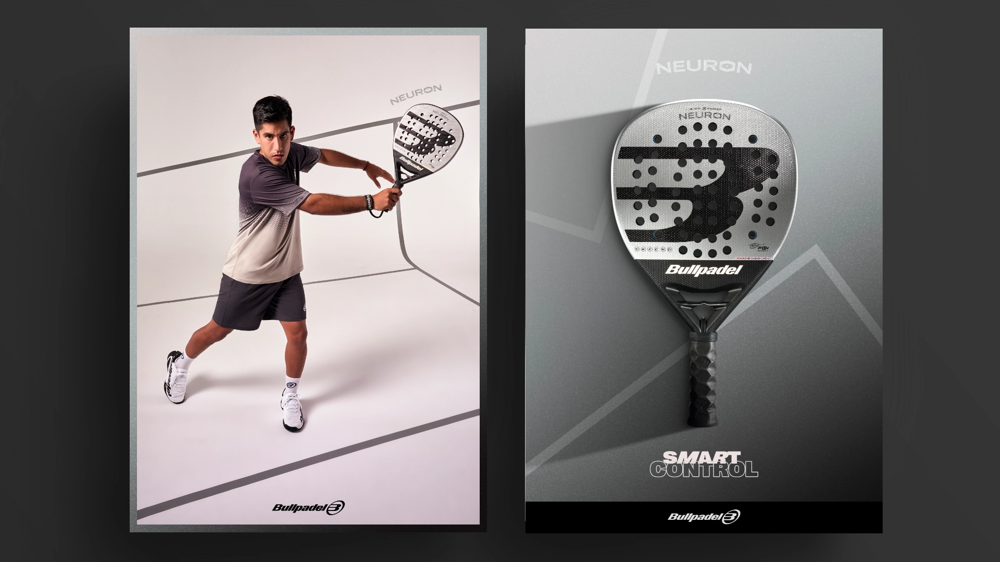

To launch Bullpadel's new Proline 2024 collection, we brought the world's top players into a visual universe built around each player's racket. One visual identity connected the entire collection, while giving each player and model its own distinctive language. The colors of each racket became sets and visual codes that shaped every piece. And the audiovisual content brought their features into play, making each racket the star.
Para presentar la nueva Proline 2024 de Bullpadel, llevamos a los mejores jugadores del mundo a un universo visual creado alrededor de su pala. Una misma identidad para toda la colección, pero un lenguaje propio para cada jugador y modelo. Los colores de cada pala se convirtieron en escenarios y códigos visuales que definían cada pieza. Y el contenido audiovisual ponía en juego sus prestaciones, haciendo de cada pala la protagonista.



As a teaser for the campaign, we brought the new Proline collection to the streets with an OOH installation hiding a surprise. The balls dropping from the structure turned the activation into a game that continued beyond the installation itself. People had to find them around the area by following the clues. And whoever found one could take home one of the new Proline rackets.
Como teaser de la campaña, llevamos la nueva colección Proline a las calles con un OOH que escondía una sorpresa. Las pelotas que caían del soporte convertían la acción en un juego que continuaba más allá de la pieza. Había que encontrarlas por la zona siguiendo las pistas. Y quien encontraba una, podía llevarse una de las nuevas palas Proline.



